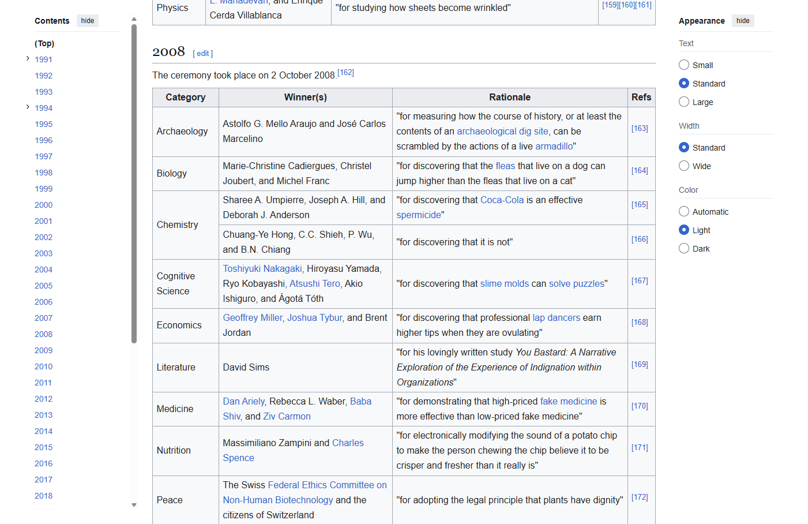
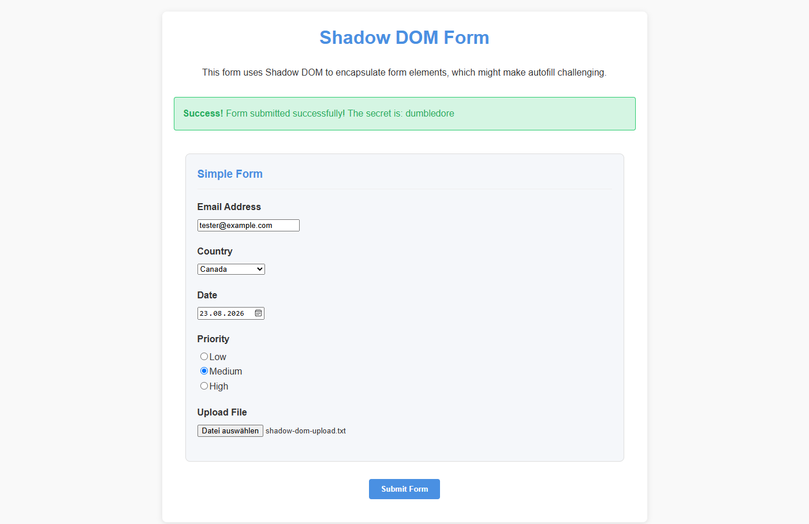
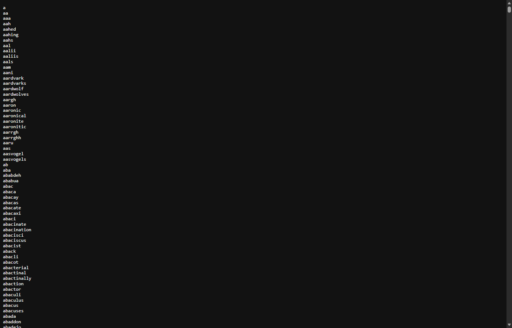
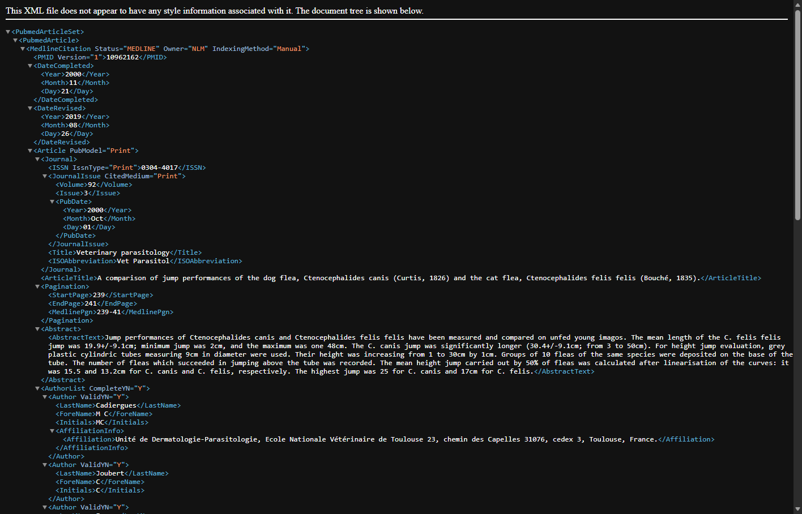
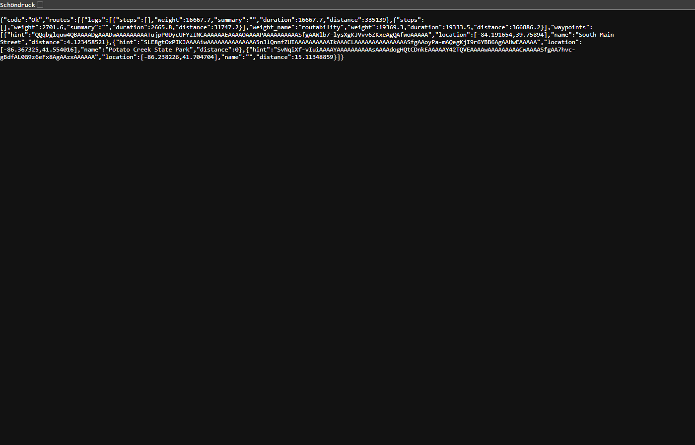

Outcome
The first 25-task baseline produced rich telemetry, but the five-task candidate did not beat it: agent time rose 14%, input tokens 80%, CDP calls 1%, and commands 9%. Candidate quality was 3/5 versus an audited matched baseline of 4/5. This is a diagnosis and iteration report, not a victory lap.
Method and provenance
Fixed axes
- Candidate and judge: gpt-5.6-luna, reasoning max.
- Only v2 executed; v1 was source-inspected, never run.
- Local subscription CLI, no model API keys.
- Fresh 1440×1000 headless Edge profile per cell.
- Search discovery still navigated through v2.
- One-second owned-process-tree sampling.
Recorded evidence
- Every harness helper span and typed outcome.
- Sanitized CDP method, latency, request/response byte counts.
- Bounded page/network/performance diagnostics.
- Action screenshots and journal-linked recordings.
- Agent, daemon, browser CPU/RSS/I/O samples.
- Candidate worktree diff and status fingerprints.
The encrypted suite contains 100 tasks (20 per category). This campaign selected a 25-task valid slice, five per category, using category-matched replacements for CAPTCHA exclusions. Baseline runs: v2-luna-telemetry-20260823-b01 through b04. Candidate run: v2-luna-efficiency-ab-20260823-c02. Raw task content stays only in run_data and is not reproduced here.
Baseline results
The campaign stopped only after obtaining five non-CAPTCHA tasks per category. Thirteen blocked attempts were excluded, not converted into zeros.
| Category | Valid | Raw pass | Eligible pass | Agent time | Input tokens | CDP |
|---|---|---|---|---|---|---|
| GAIA | 5 | 2/5 | 2/5 | 14.4 min | 2,142,012 | 947 |
| WebBenchREAD | 5 | 0/5 | 0/3 | 9.2 min | 791,097 | 636 |
| InteractionTests | 5 | 1/5 | 1/4 | 17.3 min | 1,381,945 | 909 |
| BrowseComp | 5 | 4/5 | 4/5 | 1.22 h | 19,422,192 | 7,317 |
| OM2W2 | 5 | 0/5 | 0/4 | 1.42 h | 21,134,392 | 8,768 |
| Task | Category | Outcome | Agent time | Commands | Input tokens | CDP | Helpers |
|---|---|---|---|---|---|---|---|
| #2 | InteractionTests | impossible | 3.0 min | 9 | 238,096 | 156 | 43 |
| #3 | GAIA | fail | 1.2 min | 6 | 144,701 | 103 | 18 |
| #5 | WebBenchREAD | fail | 51.7 s | 4 | 92,903 | 67 | 11 |
| #8 | GAIA | pass | 5.1 min | 18 | 1,288,403 | 380 | 121 |
| #10 | WebBenchREAD | impossible | 2.7 min | 10 | 217,424 | 191 | 55 |
| #11 | OM2W2 | fail | 15.9 min | 50 | 2,019,378 | 904 | 206 |
| #12 | InteractionTests | fail | 1.9 min | 8 | 150,475 | 88 | 26 |
| #13 | GAIA | fail | 3.0 min | 14 | 427,124 | 295 | 82 |
| #15 | WebBenchREAD | fail | 1.4 min | 6 | 113,617 | 52 | 11 |
| #17 | InteractionTests | fail | 5.3 min | 16 | 426,052 | 234 | 29 |
| #18 | GAIA | fail | 1.6 min | 7 | 118,880 | 52 | 11 |
| #20 | WebBenchREAD | fail | 2.1 min | 7 | 228,237 | 128 | 27 |
| #22 | InteractionTests | pass | 4.1 min | 11 | 394,005 | 245 | 75 |
| #23 | GAIA | pass | 3.4 min | 8 | 162,904 | 117 | 21 |
| #25 | WebBenchREAD | impossible | 2.2 min | 7 | 138,916 | 198 | 82 |
| #27 | InteractionTests | fail | 3.0 min | 6 | 173,317 | 186 | 38 |
| #29 | BrowseComp | pass | 10.4 min | 37 | 5,341,499 | 1,324 | 662 |
| #31 | OM2W2 | fail | 20.9 min | 51 | 4,479,800 | 1,894 | 787 |
| #34 | BrowseComp | pass | 22.5 min | 85 | 12,097,028 | 2,412 | 1,021 |
| #36 | OM2W2 | impossible | 15.4 min | 42 | 5,008,412 | 1,431 | 636 |
| #39 | BrowseComp | fail | 30.0 min | 134 | 0 | 2,571 | 669 |
| #44 | BrowseComp | pass | 4.1 min | 18 | 935,744 | 503 | 205 |
| #49 | BrowseComp | pass | 6.1 min | 23 | 1,047,921 | 507 | 191 |
| #51 | OM2W2 | fail | 22.7 min | 60 | 6,962,906 | 3,252 | 1,924 |
| #56 | OM2W2 | fail | 10.1 min | 32 | 2,663,896 | 1,287 | 654 |
Where the time and tokens went
Navigation waiting dominated the harness
29.6 min was spent inside goto beyond the measured Page.navigate protocol time. Raw navigation was not the main problem; waiting for lifecycle completion after content was useful was.
Context was overfed
2,917,959 captured characters came from 395 commands containing page_text(). The old 22.9 KB skill was also read 20 times and then replayed in the growing agent context.
| Telemetry dimension | Observed baseline |
|---|---|
| Sanitized CDP payload bytes | 9.0 MB request / 118.9 MB response |
| Diagnostics | 628 snapshots / 4,949 retained failure-lifecycle events |
| Peak browser tree RSS | 3.57 GiB across up to 29 owned processes |
| Peak agent tree RSS | 412 MiB |
| Summed browser CPU | 0.34 CPU-hours |
| Largest page resource set | 250 resources / 13.8 MB transferred |
| Worst sampled event-loop delay | 36.0 ms |
| Peak host memory use | 50.1% |
General-purpose v2 changes
Every change targets measured cross-site behavior. The first six were present in candidate c02; the remainder were implemented after examining c02 and therefore have live-browser and test evidence, but no benchmark score claim yet.
The failed first optimization was useful
Candidate c01 exposed a latent transport-pressure bug; c02 repaired that bug but still did not win the matched sample. Both runs remain visible rather than being averaged away.
Candidate c01: event-burst disconnects
83 helper failures were classified as browser_disconnected across four non-CAPTCHA cells. It passed 3/4, spent 45.7 min, and used 10,140,912 input tokens. One OM task hit CAPTCHA and was excluded.
Candidate c02: transport recovery, not benchmark victory
The queue peaked at 195 frames—well above the former 64-frame limit—with 0 overflows and 0 disconnected helpers. The 2 peer-eviction records were post-close fan-out races, not buffer overflow. Task #5 fell from 18.7 min to 2.1 min, but c02 was still slower and more token-heavy than matched baseline overall.
Matched five-category sample
One previously valid task per category was rerun with c02. All four efficiency endpoints moved the wrong way, and candidate quality was 3/5 versus 4/5 after matched baseline rejudging. With one live-web observation per task, this is a clear “do not claim a win,” not a precise causal estimate.
| Task | Agent time | Input tokens | CDP calls | Score |
|---|---|---|---|---|
| #5 · WebBenchREAD | 51.7 s → 2.1 min +143.8% | 92,903 → 234,011 +151.9% | 67 → 122 +82.1% | 0 (audit) → 0 |
| #11 · OM2W2 | 15.9 min → 16.3 min +2.1% | 2,019,378 → 4,876,057 +141.5% | 904 → 1,091 +20.7% | 1 (audit) → 0 |
| #22 · InteractionTests | 4.1 min → 6.2 min +50.1% | 394,005 → 508,316 +29.0% | 245 → 231 -5.7% | 1 (audit) → 1 |
| #23 · GAIA | 3.4 min → 3.7 min +7.2% | 162,904 → 185,490 +13.9% | 117 → 126 +7.7% | 1 (audit) → 1 |
| #44 · BrowseComp | 4.1 min → 4.3 min +4.6% | 935,744 → 693,953 -25.8% | 503 → 288 -42.7% | 1 (audit) → 1 |
Baseline scores marked “audit” were rejudged with the same full-response input contract as the candidate. Original raw verdicts and result files remain untouched; this report re-summarizes raw journals only to remove duplicated daemon/client CDP evidence.
Visual evidence
Selected frames from the local action recordings. They are evidence of rendered state, not automatic proof of task correctness.





Validity assessment
Not leaderboard-ready
- 13/38 attempted cells encountered CAPTCHA.
- Several tasks were impossible, stale, or conflicted with the product’s no-submit safety boundary.
- The configured search page was reachable but semantically unusable: it returned no results during live validation.
- One run per task cannot estimate model or live-web variance.
- The original judge input omitted answer detail and produced two demonstrated false negatives in six audited tasks.
Still highly useful
- The five-category sample exposed repeatable hot paths and a real queue-overflow defect.
- Telemetry separates model time, helper time, actual CDP, browser resources, recording, and transport pressure.
- CAPTCHA exclusions are explicit and auditable.
- Matched reruns use immutable task IDs and candidate fingerprints.
- Failures revealed benchmark-contract defects that a pass-rate table would conceal.
Verdict: keep the benchmark as an engineering telemetry suite, but semantically preflight task dependencies, freeze judging, and add paired repetition before treating the aggregate score as product truth.